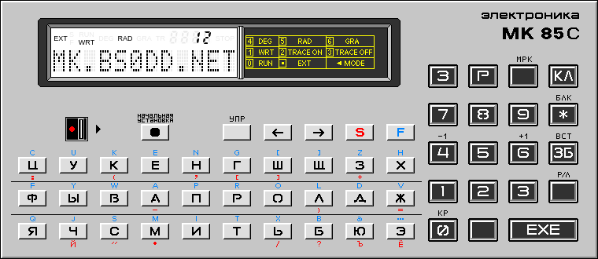
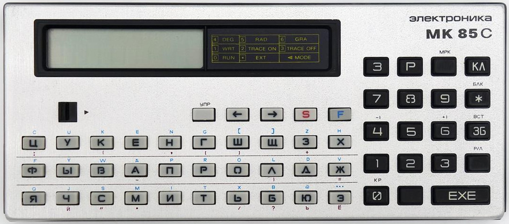

About JS85cEMU

JS85cEMU is an emulator of the Soviet/Russian encryptor known as Elektronika MK85C
or "Ancript". This device differs from the Elektronika MK85 microcomputer only in its modified design and special firmware.
GitHub: JS85cEMU
2024, 2025 © Compys S&N Systems
|
Based on js-mk85 emulator
2016 © Alexei Gordeev a.k.a. KP1533TM2 |
Analysis of MK-85C operation and materials
2024 © Bs0Dd, MaFrance351, rpocc, xff, kaseiiro |
Changelog
-> Version 1.64 - 27.07.2025
- The emulator processor no longer calls vector 04 (BUS ERROR) when accessing a word
at an odd address. According to the real MK85 and the LSI-11 specification (on which
the 1801VM2 core is based), the processor in such a case ignores the A0 bit (the least
significant bit of the address), performing alignment to an even address.
- It's been one year since I started working on JS**EMU projects!
-> Version 1.62 - 06.03.2025
- Fixed a bug with incorrect address disassembly in SOB and BR family operations.
- Fixed a bug with incorrect parsing of the breakpoint address.
-> Version 1.61 - 16.10.2024
- The first public version of the emulator, based on JS85EMU v1.61, therefore inherits its version
- The emulator has been adapted to use the MK85C firmware, modules for working with
BASIC have been removed
- New utility: Xchanger. Designed for simplified data exchange between the user and MK85C
- Added experimental mode of the MK85Б banking model.
ROM is not included in the emulator for legal reasons
